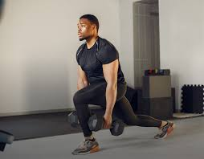

ditulis tanggal 14 oktober 2023 oleh Sahrul Setiawan NIM 11210251000085
Hidup diperkotaan yang penuh kesibukan ini membuat kita sulit untuk mengatur
waktu antara pekerjaan dan dengan Workout. Padahal, workout memiliki sejumlah manf
aat penting bagi kesehatan fisik dan mental Anda. Workout membantu meningkatkan
kekuatan dan ketahanan tubuh, meningkatkan kesehatan jantung, mengurangi risiko penyak
it kronis seperti diabetes, menjaga berat badan yang sehat, serta meningkatkan mood dan m
engurangi stres. Ini juga mendukung kualitas tidur dan meningkatkan energi sehari-hari, me
mbuat Anda merasa lebih baik secara keseluruhan. Untuk kamu yang baru ingin memulai Work
out dirumah, berikut adalah lima gerakan workout yang cocok untuk kamu.
Squat adalah latihan yang melibatkan berdiri dengan kaki selebar bahu,
kemudian menurunkan badan Anda seolah-olah akan duduk di kursi. Pastikan
untuk menjaga postur yang benar dengan punggung lurus dan lutut yang tidak
melewati ujung jari kaki. Gerakan ini membantu memperkuat otot paha, panggul,
dan punggung bawah.

2. Lunges
Lunges adalah gerakan yang melibatkan mengambil langkah besar ke depan dengan
satu kaki dan menurunkan badan hingga lutut yang berada di belakang hampir menyentuh
lantai. Kemudian, angkat tubuh kembali ke posisi berdiri. Ini membantu melatih otot paha,
bokong, dan otot kaki lainnya, serta meningkatkan keseimbangan.
3. Push-Up
Push-up adalah gerakan yang melibatkan angkat tubuh dengan tangan hingga lengan lurus,
kemudian turunkan kembali. Jika Anda tidak cukup kuat untuk melakukan push-up penuh,
Anda dapat melakukan knee push-up dengan lutut menyentuh lantai. Gerakan ini menguatkan
otot dada, bahu, dan lengan.
The characters in a password field are masked (shown as asterisks or circles).
4. Plank
Plank adalah latihan yang melibatkan berbaring telentang dengan
lengan Anda diletakkan di bawah bahu. Kemudian, angkat tubuh Anda dari
lantai dengan bahu lurus di atas pergelangan tangan. Tubuh Anda harus membentuk
garis lurus dari kepala hingga kaki. Gerakan ini memperkuat otot perut, punggung,
dan inti tubuh.
5. Sit-Up
Crunches melibatkan berbaring telentang dengan kaki ditekuk dan kaki rata di lantai.
Anda dapat meletakkan tangan di belakang kepala atau salib di dada. Kemudian, angkat
bahu Anda dari lantai beberapa inci dengan menjaga leher Anda dalam posisi yang benar.
Gerakan ini menguatkan otot perut Anda.
VARIASI
SET
REPS
RECOVERY
Squat
3 kali
10-15 gerakan
20-30 detik
Lunges
3 kali
10-15 gerakan
20-30 detik
Push-Up
3 kali
8-15 gerakan
20 detik
Plank
1 kali
1 kali
2 menit
Sit-Up
3 kali
10-15 gerakan
20-30 detik
Penting untuk selalu memulai dengan intensitas yang sesuai dengan tingkat kebugaran Anda,
dan secara bertahap meningkatkannya seiring berjalannya waktu. Selain itu, menjaga postur
yang benar adalah kunci untuk menghindari cedera saat melakukan latihan. Jika Anda memiliki
masalah kesehatan yang ada atau merasa tidak nyaman, sebaiknya konsultasikan dengan dokter
atau instruktur kebugaran sebelum melanjutkan latihan.
Semoga Informasi ini bermanfaat. Salam Sobat Sehat!!!
Kesulitan dalam membentuk badan ideal? Tidak memiliki banyak waktu untuk olahraga? atau tidak punya teman untuk meulai semuanya? Tenang!
Gymnastic Kami selalu ada untuk anda. Dengan memiliki banyak program pembentukan badan kami akan membantu anda memilih program yang cocok
untuk keluhan badan anda. dan yang pasti garansi 1 bulan jika berat badan tidak berubah uang kembali. Maka dari itu, Join Club gymnastic kami
untuk mendapatkan benefitnya!!!